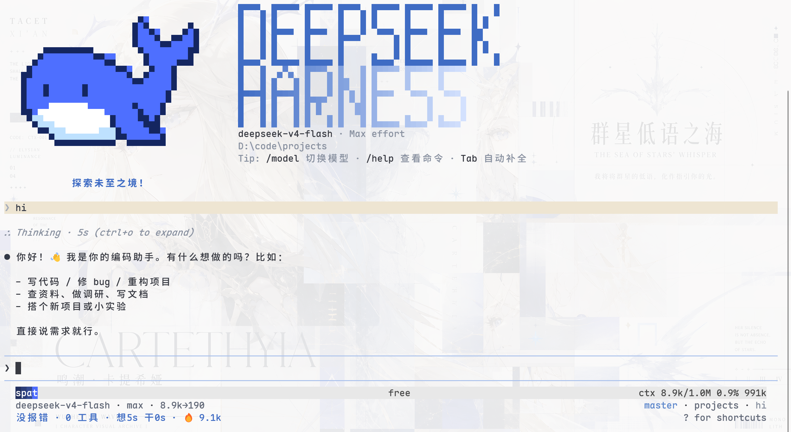
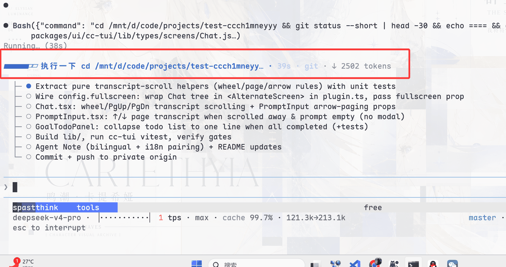
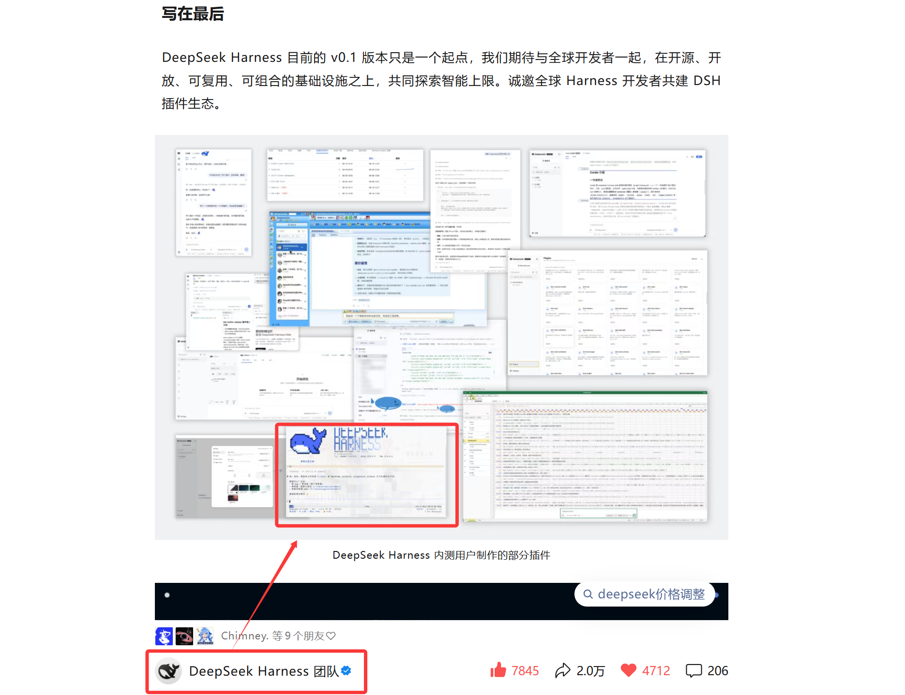

上期结尾预告的是 OpenBiliClaw，动手查的时候发现一个情况得先交代：3,190 star 是它内容 Agent 本仓的，DSH 插件仓只有 56 star——按我们定的 1000 star 门槛，出局。补位上来的是 dsh-TUI（ccch1mneyyy，2,835 star）：被 DeepSeek 官方公众号收录、上过 GitHub Trending 日榜第七的终端界面插件。前九篇拆的插件全长在 Web 界面上，这一篇换个地界——把整个 dsh 搬进终端。还是先对号入座。
场景一：SSH 进服务器干活。 你在远程机器上改代码，没有浏览器也没有桌面，Web 界面的工作台全部失效——但你照样想让 agent 干活。终端是服务器上唯一确定存在的东西——浏览器可以有意见，服务器没得选。
场景二：Web 页面开着费神。 浏览器标签越开越多，你只想像用 Claude Code 那样，在终端里敲两句话让 agent 跑着，眼睛盯的是日志和 diff，不是一个聊天网页。而且 Web 界面再轻也是一整套前端，终端才是开发者常驻的地方。
场景三：多会话要统管。 三四个 agent 并行跑任务，Web 里切来切去；你想要的是像终端复用器那样一眼看到所有会话状态，谁跑完了谁卡住，键一按就切过去。更进一步，你不想手动盯——派发完就让它们自己跑，回头一次性收结果。
dsh-TUI 一起解决：一个装在终端里的完整 dsh 界面，官方口径是低资源占用、长会话稳定，实时显示工作状态、TPS、缓存命中率、推理等级、输入输出 token 和 Git 信息。它和 Web 界面共享同一个 dsh 内核、同一批会话数据——你切换的只是外壳，里面跑的 agent 一个字没变。还是系列固定四段：接入、使用、截图切图看功能、源码简单分析大概实现。
● ● ●
npm install -g @deepseek-harness-tui/dsh-tui
# 77 个包，13.8s（v0.10.0-beta.5）
dsh-tui update
# 自举 profile：68 包 2.7s，初始化 ~/.dsh/profiles/dsh-tui
它是个双层结构：npm 装的 dsh-tui 命令是 launcher（启动器），首次 update 把真正的 TUI profile 装进 ~/.dsh/profiles/dsh-tui，之后 dsh-tui 和 dsh --profile dsh-tui 等价——嫌长还有个 dst 两个字母的短命令。启动器只管装、查、升级，运行时住 profile 里，升级不碰你的全局包。启动前跑一下它自带的体检：
$ dsh-tui doctor
✓ node: v22.22.3 · darwin arm64
✓ dsh: 0.1.1-rc.2
✓ pnpm: 11.24.0
✓ profile: 0.10.0-beta.5
✓ launcher ↔ profile: 已对齐
✗ DEEPSEEK_API_KEY: 未设置——交互启动读取
五查三过就算就绪（API key 是你自己环境的事，doctor 只提醒不代设）。装过程中如果 pnpm 拦构建脚本（@google/genai、protobufjs），按提示写入 allowBuilds 即可——这两个包的脚本运行时根本不需要，拦了也不影响，新版 /update 会自动写好这份配置。
● ● ●
/resume 管历史。 按工作目录分类浏览、搜索、预览历史会话，左键恢复、右键出操作菜单，常用会话可固定置顶——行内一颗 ★ 或 Ctrl+P 切换，持久化到 ~/.dsh-tui，下次打开还在。
/agentview 管并行。 会话总览，Claude Code 同款 agent view：空输入按 ← 一键把当前会话丢后台，后台会话的派发、预览、回复、停止一站式管理——场景三的答案就在这。
长输出不打架。 终端窄，多行命令卡能把会话刷成一团——/settings 里把多行工具卡折叠成首行加计数提示（Ctrl+O 或点击展开）；全屏模式下悬停在截断的工具卡标题、用户消息或会话标题上约 600ms，浮层显示完整内容。终端里最难的"内容挤"问题，它给了两个开关。
日常动作全齐。 /new 开新会话、/compact 压缩上下文、/export 导出、/btw 侧问，模型热切换不用重启，原生 subagent、会话 fork，/update 自更新；输入框三件套：/vim 模式、鼠标选区编辑（拖选高亮、双击选词、Ctrl+C 复制选区）、全屏草稿编辑（Ctrl+Shift+E：行号 + 当前行高亮 + 滚轮滚动，长草稿独占整屏，嫌吵 /settings 可关）。
技能归 DSH 管，TUI 不另起炉灶。 /skills 展示的是当前 profile、用户与项目三层发现的技能——TUI 不预装任何通用技能，技能体系统一归 dsh 管，界面上只做展示和触发。这个边界划得很干净：界面是界面，能力是能力。
鲸鱼娘也搬来了。 开屏随机三选一开场动画，点击鲸鱼冒爱心；/settings → whaleIdle 开启闲置动画后，开屏定格的鲸鱼会继续摆鱼鳍、拍尾巴，agent 工作时持续游动，空闲 10 秒入睡冒 Z，任何工作立刻唤醒。22 帧手绘帧全部来自社区，下文源码节细说。
两条出圈的路线。 它能在 VS Code 里以插件形式启动（已上架 Marketplace），终端体验直接嵌进编辑器侧栏；还带原生浏览器交互和 computer use 扩展——终端里的 agent 照样能看网页、点按钮，不是困在字符界面里的残血版。
● ● ●
首屏：像素鲸鱼顶栏，开场动画随机三选一：

图：dsh-TUI 首屏——像素鲸鱼顶栏（官方仓库截图）
图：dsh-TUI 首屏——像素鲸鱼顶栏（官方仓库截图）
工作状态行 + 上下文进度条，agent 干活时你盯的就是这一行：

图：工作状态行与上下文进度条（官方仓库截图）
图：工作状态行与上下文进度条（官方仓库截图）
官方公众号收录的推文：

图：DeepSeek 官方公众号收录 dsh-TUI（官方仓库截图）
图：DeepSeek 官方公众号收录 dsh-TUI（官方仓库截图）
主题有哪些、能不能换？ 三套 Gentle Mist Blue 色板外加一个 auto 伪主题：light（暖白背景墨色正文）、dark（暖灰正文柔雾蓝）、dark-ansi（只依赖 16 色 ANSI 的兼容回退，老终端也能跑）。auto 走 OSC 11 查询终端背景自动选深浅，跟随系统主题的终端切了色它跟得上；/theme 热切换不重启，选择持久化到 ~/.dsh-tui/theme.json，环境变量 DSH_TUI_THEME 优先级最高；还想折腾就在 ~/.dsh-tui/themes/ 放 JSON 自定义主题——起个 base 色板再覆盖几个色值，樱花粉就是官方文档里的示例；插件也能注册自己的运行时主题。终端里的主题没有"关不关"的问题，/theme 一键回默认，随时。
● ● ●
最值得看的架构决策是启动器和运行时分离：npm 全局只装一个 26KB 的 launcher（bin/dsh-tui.js），真正的 TUI 运行时住在独立 profile 里，/update 自更新只动 profile、不碰全局包——升级和运行解耦，坏了自己能回滚。体检 (doctor) 也是 launcher 的职责：启动前把 node/dsh/pnpm/profile/密钥全查一遍，问题在进入 TUI 之前就报出来。
仓库里能看到它对边界的认真：一份 ADAPTER.md 讲清与 dsh 的接缝在哪里、什么算适配层不该碰的；patch-surface.snapshot.json 给 cordis 接缝拍了快照（dsh --dump-config 对账用的），防上游改动悄悄破坏适配；i18n 一个文件 135KB，中英双语连帮助和命令描述都覆盖；update.ts 78KB，一套带校验和与回滚的自更新系统——终端软件怎么自我更新不搞坏自己，这 78KB 就是答案。回看接入节的 doctor 输出，它检查的五项（node/dsh/pnpm/profile/密钥）正好是终端工具最常见的五种翻车方式——报错在启动前，而不是黑屏之后。这份体检清单是 launcher 带来的隐性福利：Web 插件装完靠刷新页面验证，TUI 靠 doctor 把问题拦在门外。
翻仓库还能看到它的测试文化：170 多个 verify-*.tsx 脚本，一个功能一条自动化验证——从 vim 模式、鼠标拖选、IME 光标，到"流式输出时拖拽选择不炸""全屏退出后 Esc 恢复正常"这种边角场景都有专人脚本盯着。终端 UI 的状态复杂度是出了名的高，这些脚本就是它敢自称"长会话稳定可靠"的底气。
还有一个彩蛋：像素鲸鱼娘的 22 帧手绘原图和闲置行为移植自 dsh-ui-whale（作者 lhh010），README 里专门致谢——闲置 10 秒入睡冒 Z，任何工作立刻唤醒游起来。
对了，它还有一个经常被忽略的身份：VS Code 插件已上架 Marketplace，在编辑器里装一个扩展就能把 TUI 嵌进侧栏——不想切窗口的，这条路线最顺。
● ● ●
说边界。SSH 上服务器、长期挂机跑长任务、键盘流——装，它就是为你做的；重度依赖右侧面板、看板、皮肤这些图形化能力——留你的 Web 双雄，TUI 这边没有这些。两者共享同一个 dsh 和同一批会话，不是二选一，是分工：我的用法是 Web 开着看板和右侧面板当"驾驶舱"，SSH 进服务器或在终端里挂长任务时走 TUI。
● ● ●
dsh-TUI 补的是 dsh 生态最后一块界面空缺：Web 界面之外，终端里也有一个完整的、可长期驻留的 dsh。对 SSH 上服务器的、嫌浏览器重的、要统管多会话的，它是对的那杯茶；工程上 launcher/profile 分离 + doctor 前置体检 + 接缝快照，把"终端软件怎么自我更新不搞坏自己"这个老问题答得干净。1000 star 门槛之上，这是 Web 双雄（better-sidebar、dsh-web）之外第三种界面形态的活样本。和 Web 版不是替代关系：盯板子、看图、点面板用 Web；长时间挂机干活、SSH 远程、键盘流用 TUI，同一个 dsh、同一批会话，两边各干各的。
下一篇继续按门槛往下走：dsh-market（3,186★，DSH 里的插件市场，浏览/搜索/一键安装——和 EP09 讲过的创意工坊是什么关系，到时对着拆）。
感兴趣可以 clone 源码跑一下，docs/ 目录里有一份 42KB 的用户手册，比本文细得多。
源码地址：github.com/ccch1mneyyy/dsh-TUI（npm：@deepseek-harness-tui/dsh-tui）